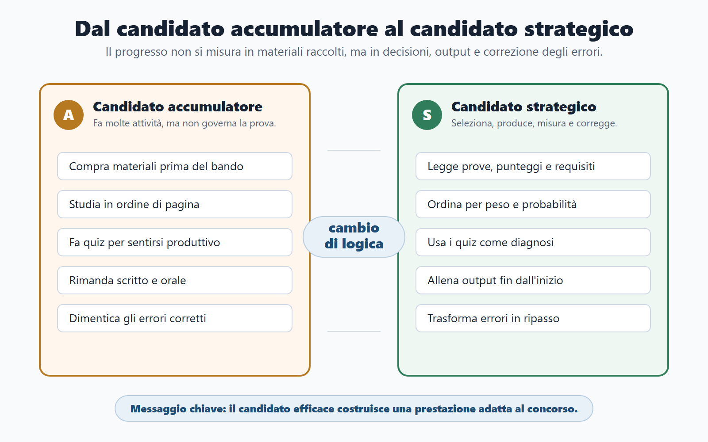
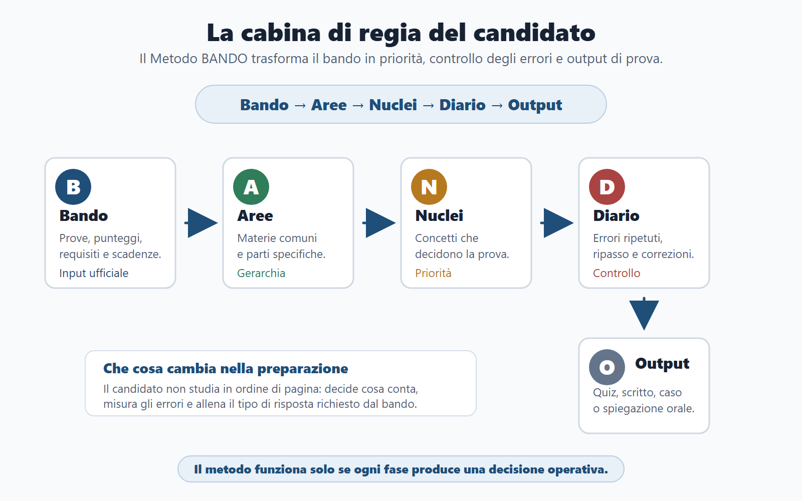
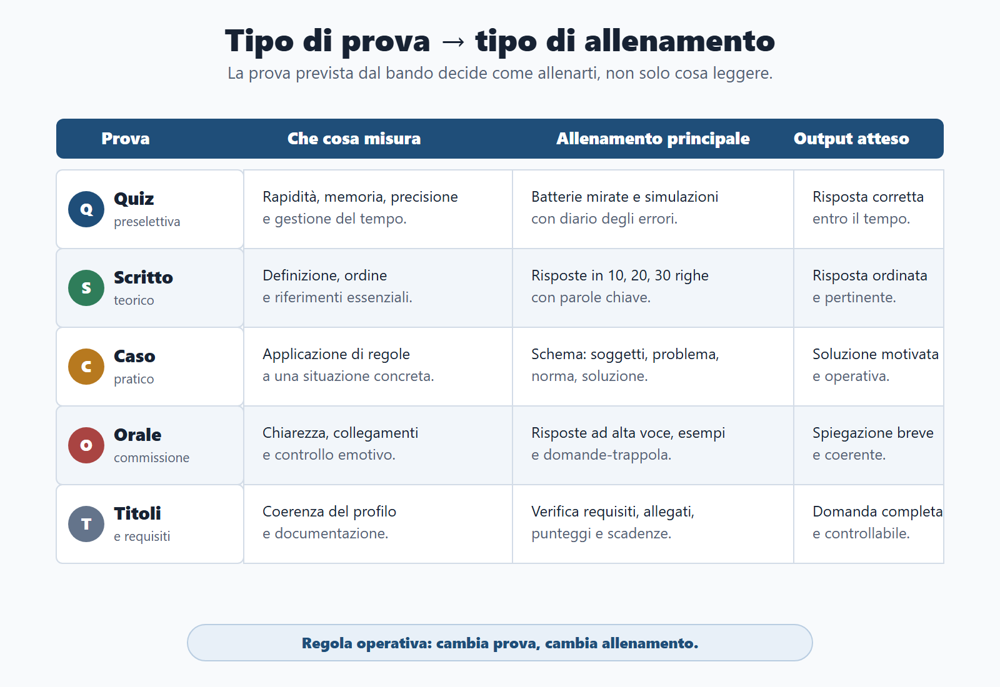
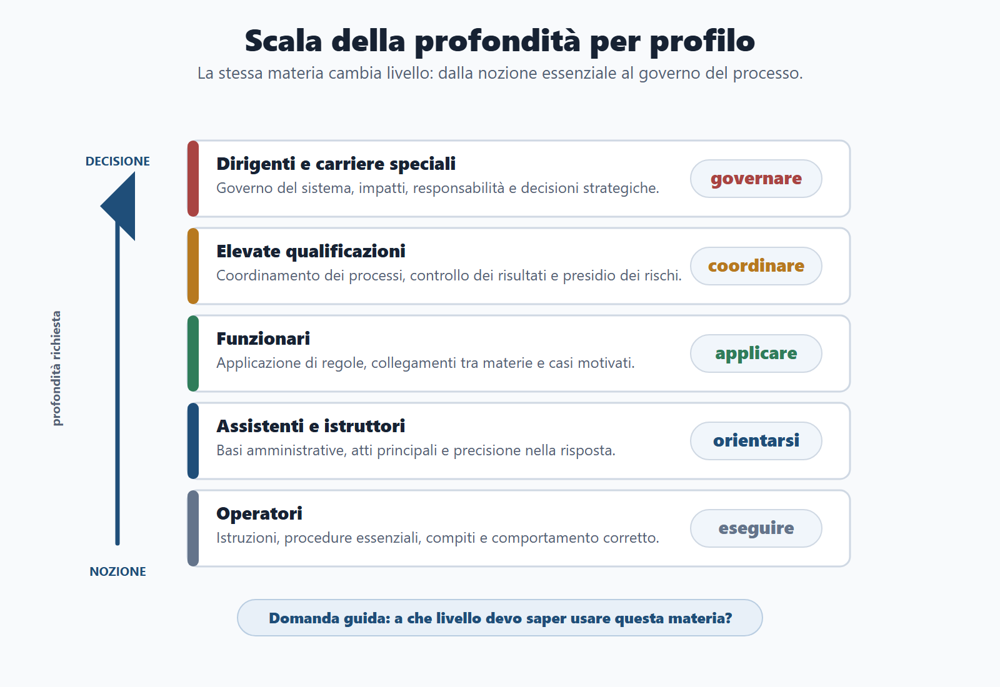
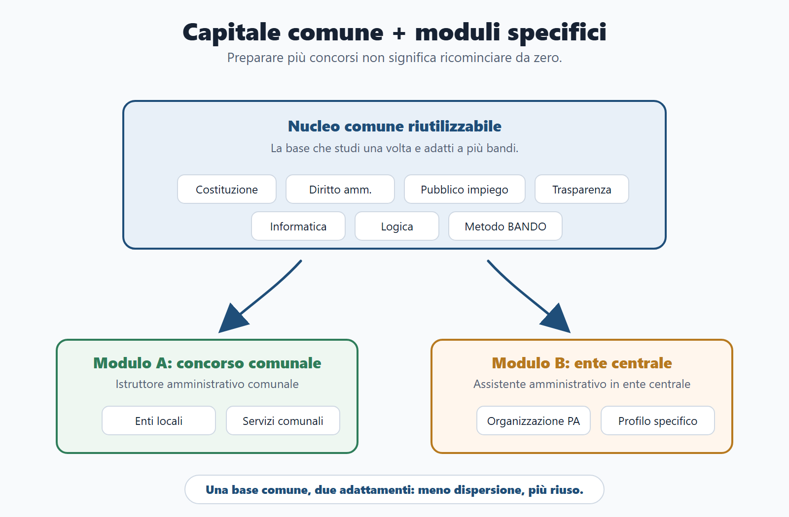

VOL-01 · Capitolo 01
Parte I · Il Metodo BANDO
Il nuovo candidato
pubblico
Non sei uno studente che deve «fare tutto». Sei un candidato che deve costruire una prestazione adeguata a un concorso specifico, senza perdere il capitale di studio che potrà servirti anche in altri bandi.
Schema
Candidato accumulatore vs strategico

01 · Punto di partenza
Il libro parte dal candidato,
non dalla materia
Molti manuali aprono con Costituzione, amministrativo o quiz. Qui si parte da chi deve decidere: quale concorso scegliere, quali materie mettere al centro, quali prove allenare, quali materiali scartare e quali errori correggere prima che diventino abitudini.
Che tipo di gara è
In un concorso conta usare tempo limitato, informazioni ufficiali e studio per dare la risposta richiesta. Prima di studiare il procedimento o la logica, devi capire profilo, prove e profondità attesa. Altrimenti tratti ogni pagina come obbligatoria.
Quale prestazione serve
Il candidato efficace non accumula fonti: seleziona i materiali, produce quiz, risposte, casi o orale, e usa gli errori per correggere il percorso. La prestazione è ciò che la prova misura, non il numero di pagine sottolineate.
02 · Cabina di regia
Senza metodo, l’impegno si disperde
Se parti subito dai contenuti, rischi di fare come quasi tutti: compri un manuale, apri una banca dati, sottolinei molto e dopo una settimana non sai se stai avanzando. Di solito non manca l’impegno. Manca una cabina di regia.

BANDO decide priorità, errori e output. Non sei uno studente che deve coprire l’enciclopedia: sei un candidato che costruisce una prestazione.
03 · BANDO
Cinque domande, cinque errori da evitare
Ogni lettera è una decisione operativa, non un acronimo da ricordare. Se salti una fase, lo studio continua ma senza governo.
| Domanda decisiva | Errore da evitare | |
|---|---|---|
| B — Bando | Che cosa chiede davvero questo concorso? | Iniziare dal manuale senza aver letto prove, punteggi e requisiti. |
| A — Aree | Quali materie sono comuni e quali sono specifiche? | Trattare tutte le materie come se avessero lo stesso peso. |
| N — Nuclei | Quali concetti hanno più probabilità di decidere la prova? | Studiare in ordine di pagina, non in ordine di priorità. |
| D — Diario | Quali errori sto ripetendo? | Correggere un quiz senza capire perché è stato sbagliato. |
| O — Output | Che cosa devo saper produrre in prova? | Leggere molto senza allenare quiz, risposta scritta, caso o orale. |
04 · Come sono cambiati i concorsi
Non esiste più un modello unico
Puoi trovare una preselettiva a quiz, una prova scritta unica, una teorico-pratica, un orale, una valutazione dei titoli, una prova digitale o una combinazione. In alcuni bandi conta la velocità; in altri il ragionamento su un caso; in altri un’esposizione orale ordinata.
Candidato debole
Si limita a dire: «devo studiare amministrativo, pubblico impiego, trasparenza, informatica». Tratta le materie come un elenco fisso e non vede che operatore, istruttore, funzionario o dirigente non affrontano la stessa profondità.
Candidato strategico
Chiede prima: «come verranno usate queste materie nella mia prova?». Cambiano responsabilità attese, autonomia, tipo di domande e qualità della risposta. La stessa norma, profondità diversa.
05 · Studio debole
Perché molti studiano tanto ma male
La preparazione dispersiva nasce quasi sempre da una falsa partenza: aprire il manuale prima di scomporre il bando, cominciare dai quiz perché danno subito movimento, o trattare due concorsi come due mondi separati.
| Segnale | Che cosa manca |
|---|---|
| Non sai dire quali materie sono decisive | Gerarchia: obbligatorie, killer, accessorie, solo orali. |
| Non distingui quiz, scritto, caso e orale | Allenamento: ogni prova misura cose diverse. |
| Misuri il progresso in pagine lette | Output: risposte prodotte, non sottolineature. |
| Non registri gli errori, quindi li ripeti | Diario: memoria, concetto, distrazione, tempo, strategia. |
| Cambi metodo a ogni concorso | Capitale comune: si costruisce una volta e si adatta. |
Studiare per sentirsi tranquilli, non per produrre una prestazione. Leggere, sottolineare e fare quiz danno l’impressione di lavorare. Il progresso reale si vede quando sai rispondere, spiegare, applicare, correggere e ripetere sotto vincolo di tempo.
06 · Due candidati
Principiante e strategico, a confronto
Uno studio efficace è leggibile. Se qualcuno ti chiede «che cosa stai facendo questa settimana e perché?», devi saper rispondere con precisione.
| Candidato principiante | Candidato strategico |
|---|---|
| Compra materiali prima di leggere bene il bando. | Legge il bando e poi sceglie i materiali. |
| Studia le materie nell’ordine del manuale. | Ordina le materie per peso, probabilità e tipo di prova. |
| Fa quiz per sentirsi produttivo. | Usa i quiz per diagnosticare memoria, concetto, distrazione e strategia. |
| Rimanda scritto e orale alla fine. | Allena da subito risposte brevi, esempi e collegamenti. |
| Cambia piano quando si sente in ritardo. | Taglia, concentra e riprogramma senza perdere la mappa. |
| Dimentica gli errori già corretti. | Trasforma ogni errore in ripasso o flashcard. |
07 · Tipi di prova
Le tipologie non si studiano allo stesso modo
Un concorso per soli esami è centrato sulle prove. Uno per titoli ed esami chiede anche i titoli valutabili. Preselettiva = velocità; teorico-pratica = applicazione; orale = esposizione e collegamenti.
| Tipo di prova | Che cosa misura | Allenamento principale |
|---|---|---|
| Quiz o preselettiva | Rapidità, memoria, precisione, gestione del tempo. | Batterie mirate, diario errori, simulazioni a tempo. |
| Scritto teorico | Definizione, ordine, riferimenti essenziali. | Risposte in 10, 20 e 30 righe. |
| Teorico-pratica | Capacità di applicare regole a un caso. | Casi guidati, schemi soggetti-problema-soluzione. |
| Orale | Chiarezza, collegamenti, controllo emotivo. | Risposte ad alta voce, esempi, domande-trappola. |
| Titoli | Coerenza del profilo e documentazione. | Verifica dei requisiti, punteggi, allegati e scadenze. |

08 · Profondità
Le aree di accesso cambiano la risposta
Il procedimento amministrativo può essere chiesto a un istruttore come nozione base, a un funzionario come strumento operativo e a un dirigente come problema di organizzazione, responsabilità e risultato. Non basta chiedere «quali materie ci sono?»: a che livello devo saperle usare?

La stessa materia cambia profondità in base al profilo. «Già studiato» da istruttore può non bastare da funzionario.
09 · Capitale comune
Concorsi diversi, una parte dello studio no
Comunale, ministeriale, fiscale, sanitario, scuola, tecnico, polizia locale: le differenze sono reali. Trattarli come uguali sarebbe un errore. Restano però metodo, lettura del bando, Costituzione, principi della PA, diritto amministrativo, pubblico impiego, trasparenza, competenze digitali, logica, gestione della prova e capacità di spiegare.

Non due concorsi da zero: un nucleo comune e due adattamenti di profilo.
10 · Caso guidato
Marco, due concorsi, un nucleo
Marco vuole l’istruttore amministrativo comunale e l’assistente amministrativo in un ente centrale. Il candidato principiante comprerebbe due percorsi separati e avrebbe l’impressione di dover ripartire da capo.
Due mondi
Due manuali, due calendari, due diari. Ogni differenza di ente sembra una materia nuova. Marco studia due volte le stesse basi e non ha tempo per gli output della prova che elimina di più.
Confronto, poi moduli
Confronta i bandi. Base comune: Costituzione, amministrativo, pubblico impiego, trasparenza, informatica e logica. Poi aggiunge enti locali per il Comune e organizzazione dell’ente per il ministero. Un nucleo, due adattamenti.
11 · Verifica
Due domande da saper spiegare
Perché due candidati con le stesse ore ottengono risultati diversi?
Perché le ore non hanno tutte lo stesso valore. Conta il modo in cui sono collegate al bando, al tipo di prova, alle priorità, agli errori e all’output da produrre. Uno può leggere molto e allenarsi poco; l’altro legge meno, ma trasforma ogni blocco in quiz, risposta, caso o spiegazione orale.
Fare molti quiz significa essere ben preparati?
Non necessariamente. Il quiz è utile se diventa diagnosi: memoria, concetto, distrazione, fretta o strategia. Se fai quiz senza analizzare gli errori, stai solo accumulando movimento. Attività e avanzamento non coincidono.
12 · Mini-test
Che tipo di candidato sei?
Segna la colonna che ti rappresenta di più. Se prevale A, il primo obiettivo è smettere di confondere attività e avanzamento. Se prevale B, il metodo rende più stabile ciò che già fai in modo intuitivo.
| Situazione | Risposta A | Risposta B |
|---|---|---|
| Trovi un nuovo bando | Cerchi subito un manuale. | Leggi prima prove, materie, punteggi e requisiti. |
| Sbagli un quiz | Guardi la risposta corretta e vai avanti. | Classifichi l’errore e programmi il ripasso. |
| Hai poco tempo | Provi a fare tutto più velocemente. | Tagli le parti meno decisive e aumenti le simulazioni. |
| Prepari due concorsi | Apri due percorsi separati. | Cerchi base comune e moduli specifici. |
| Devi preparare l’orale | Aspetti di finire la teoria. | Alleni risposte brevi fin dall’inizio. |
13 · Quattro obiettivi
Che cosa devi saper fare dopo questo capitolo
Non «ho letto il capitolo». Quattro operazioni visibili, da poter spiegare a voce.
Distinguere i due candidati
Chi studia a caso accumula fonti e misura pagine. Chi studia con metodo parte dal bando, gerarchizza le materie e produce output. Se non sai in quale colonna stai, il test della slide precedente lo rende visibile.
Riconoscere le tipologie
Quiz, scritto, caso, orale e titoli non richiedono lo stesso allenamento. Un concorso per titoli ed esami non si prepara come una preselettiva: cambia che cosa misuri e quando lo alleni.
Leggere profilo e prove
Contano più della lista delle materie. Il livello atteso decide la profondità; la prova che elimina più candidati decide il primo output.
Tagliare i comportamenti che bruciano settimane
Troppi materiali, quiz usati male, simulazioni rimandate, errori non tracciati. Sono settimane perse, non «studio extra».
14 · Da tenere ferme
Cinque regole, con il perché
1. Il candidato efficace non accumula materiali: costruisce un sistema. Perché l’abbondanza senza gerarchia produce movimento, non prestazione.
2. Il bando viene prima del manuale, dei quiz e del calendario. Perché solo lui fissa prove, pesi, requisiti e tempi.
3. Ogni concorso ha una parte comune e una parte specifica. Perché ricominciare da zero è uno spreco, non una virtù.
4. Quiz, scritto, caso e orale non si preparano allo stesso modo. Perché ciascuna prova misura cose diverse.
5. Gli errori non sono incidenti: sono dati di lavoro. Perché senza classificarli li ripeti, e le ore restano opache.
Prossimo capitolo
Anatomia del bando
Da qui in poi il documento ufficiale non è un ostacolo burocratico. È lo strumento con cui decidi se partecipare, che cosa studiare prima e quale output allenare.